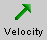
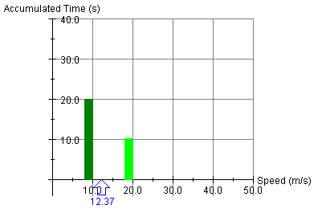
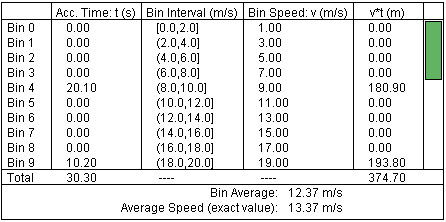
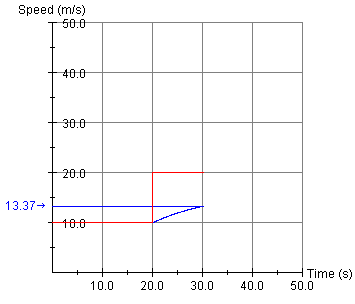
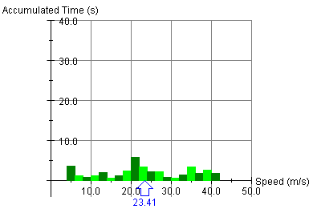

.
.
This page is designed to get you started using the applet. The applet should be open. The step-by-step instructions on this page are to be done in the applet. You may need to toggle back and forth between instructions and applet if your screen space is limited.
Exercise 1. Press the Reset button .
Display the Accumulated Time vs. Speed graph, by checking the appropriate check box . The Speed vs. Time graph and the Data box should not be displayed. Drag the graph to the left portion of the window where it will not overlap with the motion of the car.
Set the Speed slider to 10 m/s, and set the motion direction to
counter-clockwise by clicking the appropriate radio button.
Keep the number of speed bins at 25. Play  the motion at this speed until 20 s have
accumulated. Then Pause
the motion at this speed until 20 s have
accumulated. Then Pause  it.
it.
Use the Speed slider to change the speed to 20 m/s, and reverse the direction of motion to clockwise. Then Play the motion until the car is back where it started. Pause the motion when the car is back at or near its starting point. You may find it helpful to hide the car's image for this purpose by deselecting the Image button .
You may also want to hide the velocity vector by deselecting the Velocity button .
You should obtain a graph of Accumulated Time vs. Speed like that shown in Figure 1 below.

Figure 1
The dark and light green coloring of the columns is used to visually distinguish between bins. It has no other significance.
Exercise 2. Continuing from Exercise 1, deselect the
Accumulated Time vs. Speed check box to hide the graph, and
display the Data box instead by selecting the Data button  . If you made no other changes, the
Data box should contain information like that in Figure 2 below.
The accumulated times in the two bins will be slightly different
in every case.
. If you made no other changes, the
Data box should contain information like that in Figure 2 below.
The accumulated times in the two bins will be slightly different
in every case.

Figure 2
Note that the Accumulated Time is non-zero in Bins 4 and 9, the two bins containing the speeds 10 m/s and 20 m/s, respectively. Note that the Bin Speed Average of 12.37 m/s shown at the bottom of the Data box is also indicated in the Accumulated Time vs. Speed graph in the earlier Figure 1.
Exercise 3. Continuing from Exercise 2, deselect the Data button to hide the Data box and check the Speed vs. Time check box to display the Speed vs. Time graph. If you made no other changes, the Speed vs. Time graph should look as in Figure 3 below.

Figure 3
Compare the information the red graph of (instantaneous) speed vs. time can provide about the times accumulated while the motion was maintained at speeds of 10 m/s and 20 m/s to that in the earlier Figures 1 and 2. Compare the exact value of 13.37 m/s of the average speed over the entire motion from the starting point back to (nearly) the starting point to the Bin Speed Average of 12.37 m/s.

Exercise 1. Reset the applet. Arrange things so that only the Accumulated Time vs. Speed graph is displayed, apart from the car. Play the motion and vary the speed throughout the motion without pausing the motion. Observe the time accumulating in the different speed bins. An example of the kind of graph you might obtain is shown in Figure 4 below.

Figure 4
Make the column for a given speed bin grow repeatedly at diffent times during the motion, by repeatedly setting the speed to a value within that bin.
Exercise 2. Inspect the content of the Data box corresponding to Figure 4 and the Speed vs. Time graph for this motion. Are the different displays consistent?